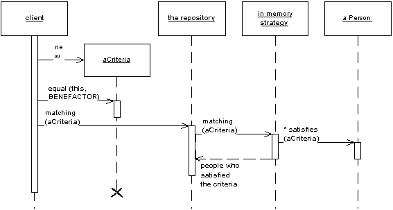

Repository (Репозиторий)

Паттерн проектирования Repository
Описание Repository
Посредничает между уровнями области определения и распределения данных (domain and data mapping layers), используя интерфейс, схожий с коллекциями для доступа к объектам области определения.
Система со сложной моделью области определения может быть упрощена при помощи дополнительного уровня, например Data Mapper, который бы изолировал объекты от кода доступа к БД. В таких системах может быть полезным добавление ещё одного слоя абстракции поверх слоя распределения данных (Data Mapper), в котором бы был собран код создания запросов. Это становится ещё более важным, когда в области определения множество классов или при сложных, тяжелых запросах. В таких случаях добавление этого уровня особенно помогает сократить дублирование кода запросов.
Паттерн Repository посредничает между слоем области определения и слоем распределения данных, работая, как обычная колекция объектов области определения. Объекты-клиенты создают описание запроса декларативно и направляют их к объекту-репозиторию (Repository) для обработки. Объекты могут быть добавлены или удалены из репозитория, как будто они формируют простую коллекцию объектов. А код распределения данных, скрытый в объекте Repository, позаботится о соответсвующих операциях в незаметно для разработчика. В двух словах, паттерн Repository инкапсулирует объекты, представленыые в хранилище данных и операции, производимые над ними, предоставляя более объектно-ориентированное представление реальных данных. Repository также преследует цель достижения полного разделения и односторонней зависимости между уровнями области определения и распределения данных.
Примеры реализации
// Repository Pattern in JavaScript
class User {
constructor(id, name, email) {
this.id = id;
this.name = name;
this.email = email;
}
}
class UserRepository {
constructor() {
this.users = new Map();
}
findById(id) {
return this.users.get(id);
}
findAll() {
return Array.from(this.users.values());
}
save(user) {
this.users.set(user.id, user);
return user;
}
delete(id) {
return this.users.delete(id);
}
findByEmail(email) {
return this.findAll().find(user => user.email === email);
}
}
// Usage
const userRepo = new UserRepository();
const user = new User(1, 'John Doe', 'john@example.com');
userRepo.save(user);
const foundUser = userRepo.findById(1);
const allUsers = userRepo.findAll();// Repository Pattern in C++
#include <iostream>
#include <vector>
#include <memory>
#include <algorithm>
class User {
private:
int id;
std::string name;
std::string email;
public:
User(int id, const std::string& name, const std::string& email)
: id(id), name(name), email(email) {}
int getId() const { return id; }
std::string getName() const { return name; }
std::string getEmail() const { return email; }
};
class UserRepository {
private:
std::vector<std::unique_ptr<User>> users;
public:
User* findById(int id) {
auto it = std::find_if(users.begin(), users.end(),
[id](const std::unique_ptr<User>& user) {
return user->getId() == id;
});
return (it != users.end()) ? it->get() : nullptr;
}
std::vector<User*> findAll() {
std::vector<User*> result;
for (auto& user : users) {
result.push_back(user.get());
}
return result;
}
void save(std::unique_ptr<User> user) {
users.push_back(std::move(user));
}
bool remove(int id) {
auto it = std::find_if(users.begin(), users.end(),
[id](const std::unique_ptr<User>& user) {
return user->getId() == id;
});
if (it != users.end()) {
users.erase(it);
return true;
}
return false;
}
};// Repository Pattern in Go
package main
import "fmt"
type User struct {
ID int
Name string
Email string
}
type UserRepository interface {
FindByID(id int) (*User, error)
FindAll() ([]*User, error)
Save(user *User) error
Delete(id int) error
FindByEmail(email string) (*User, error)
}
type InMemoryUserRepository struct {
users map[int]*User
}
func NewInMemoryUserRepository() *InMemoryUserRepository {
return &InMemoryUserRepository{
users: make(map[int]*User),
}
}
func (r *InMemoryUserRepository) FindByID(id int) (*User, error) {
user, exists := r.users[id]
if !exists {
return nil, fmt.Errorf("user not found")
}
return user, nil
}
func (r *InMemoryUserRepository) FindAll() ([]*User, error) {
users := make([]*User, 0, len(r.users))
for _, user := range r.users {
users = append(users, user)
}
return users, nil
}
func (r *InMemoryUserRepository) Save(user *User) error {
r.users[user.ID] = user
return nil
}
func (r *InMemoryUserRepository) Delete(id int) error {
delete(r.users, id)
return nil
}
func (r *InMemoryUserRepository) FindByEmail(email string) (*User, error) {
for _, user := range r.users {
if user.Email == email {
return user, nil
}
}
return nil, fmt.Errorf("user not found")
}# Repository Pattern in Python
from abc import ABC, abstractmethod
from typing import List, Optional
class User:
def __init__(self, id: int, name: str, email: str):
self.id = id
self.name = name
self.email = email
class UserRepository(ABC):
@abstractmethod
def find_by_id(self, id: int) -> Optional[User]:
pass
@abstractmethod
def find_all(self) -> List[User]:
pass
@abstractmethod
def save(self, user: User) -> User:
pass
@abstractmethod
def delete(self, id: int) -> bool:
pass
@abstractmethod
def find_by_email(self, email: str) -> Optional[User]:
pass
class InMemoryUserRepository(UserRepository):
def __init__(self):
self.users = {}
def find_by_id(self, id: int) -> Optional[User]:
return self.users.get(id)
def find_all(self) -> List[User]:
return list(self.users.values())
def save(self, user: User) -> User:
self.users[user.id] = user
return user
def delete(self, id: int) -> bool:
if id in self.users:
del self.users[id]
return True
return False
def find_by_email(self, email: str) -> Optional[User]:
for user in self.users.values():
if user.email == email:
return user
return None
# Usage
if __name__ == "__main__":
repo = InMemoryUserRepository()
user = User(1, "John Doe", "john@example.com")
repo.save(user)
found_user = repo.find_by_id(1)
all_users = repo.find_all()<?php
// Repository Pattern in PHP
class User {
private $id;
private $name;
private $email;
public function __construct($id, $name, $email) {
$this->id = $id;
$this->name = $name;
$this->email = $email;
}
public function getId() { return $this->id; }
public function getName() { return $this->name; }
public function getEmail() { return $this->email; }
}
interface UserRepository {
public function findById($id);
public function findAll();
public function save(User $user);
public function delete($id);
public function findByEmail($email);
}
class InMemoryUserRepository implements UserRepository {
private $users = [];
public function findById($id) {
return isset($this->users[$id]) ? $this->users[$id] : null;
}
public function findAll() {
return array_values($this->users);
}
public function save(User $user) {
$this->users[$user->getId()] = $user;
return $user;
}
public function delete($id) {
if (isset($this->users[$id])) {
unset($this->users[$id]);
return true;
}
return false;
}
public function findByEmail($email) {
foreach ($this->users as $user) {
if ($user->getEmail() === $email) {
return $user;
}
}
return null;
}
}
// Usage
$repo = new InMemoryUserRepository();
$user = new User(1, "John Doe", "john@example.com");
$repo->save($user);
$foundUser = $repo->findById(1);
$allUsers = $repo->findAll();
?>Использована иллюстрация с сайта Мартина Фаулера.